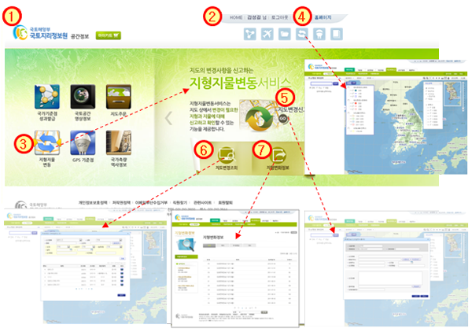

국토지리정보원 공간정보 사이트 메인화면
| ① | 국토지리정보원 로고 : 국토지리정보원 홈페이지로 이동 | |||
| ② | 상단메뉴 : 사용자 표시, 로그아웃, 정보수정 및 홈페이지로 이동 | |||
| ③ |
|
|||
| ④ |
|
|||
| ⑤ |
|
|||
| ＊ 기관권한사용자는 기관신고화면으로 전환되며, 일반사용자는 일반신고화면으로 전환 | ||||
| ⑥ |
|
|||
| ＊ 기관별 보고현황(공사현황 및 첨부파일 현황) 조회 | ||||
| ⑦ |
|
|||
| ＊ 신규 보고 또는 변경 보고된 공사현황을 일반인에게 공개 |